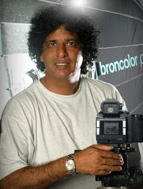
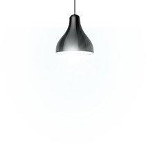
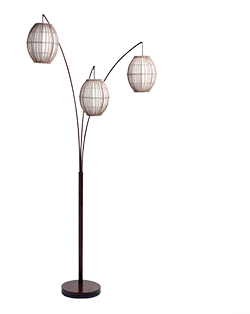
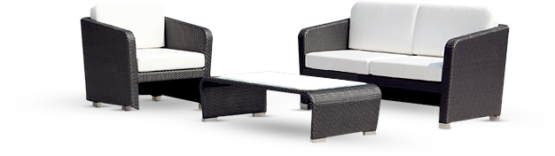
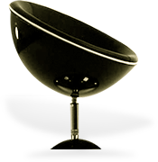

You don’t take a photograph,
You make it
Hello Guys,
It’s good to see you here. In my professional career spanning 25 years these photographs are but a few that i can lay my hands on at the moment.Since I had been a pro for more than 25years, I have photgraphed many top personalities and also many subjects and products of international repute. My fully Air-Conditioned 2100 sq.feet studio in Chennai is stocked with all the facilities and equipment to cater to all the fields which also includes the shooting of automobiles. I love what photography has to offer, and the chance to experiment along with the opportunity to try new techniques with every frame makes me yearn for it. The excitment of experimenting, using light and trying new techniques to make the final image as beautiful and exquiste as it can be is one of the most challenging and exiting jobs that I have been faced with.I do keep updating in knowledge of the latest equipments and techniques at our state of the art studio in Chennai.



